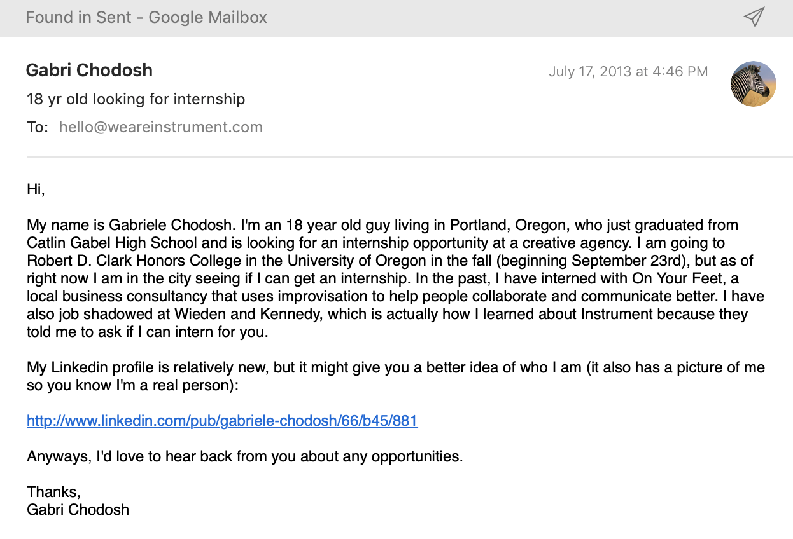

In 2013, I asked about interning with you.
I was just starting to get interested in design-thinking, research and digital strategy.
{kind=link}
Vince LaVecchia replied and said there were no current opportunities.
In 2019, 6 years later, I followed-up with Vince on LinkedIn.
Vince said I should find a role I'm interested in, research the position before applying and let him know.
I did the research. I've interviewed 4 different strategists at 4 different agencies and solidified my belief that:
1. I have a strategist's skill set.
2. I want to work at Instrument.
Why Instrument?
1. I like the type of multidisciplinary work you produce. One of my favorite pieces of work is the Digital Wellbeing website for Google. It combines primary research, video and technology to create an immersive digital experience that tells a clear story and promotes a great message.
2. I love your culture. It's highly collaborative, talented, friendly, and supportive of individual professional growth.
3. I'm fascinated by technology's potential. You use technology in forward-thinking, innovative ways that positively impact user experiences. I want to help design these new digital products.

I'm interested in any opportunity with you that will allow me to get experience and prove myself.
I've created digital marketing campaigns, co-facilitated training experiences for brands like Nike, conducted market research and built personas. I've worked with a number of tech startups on growth strategy, including a company at the cutting-edge of blockchain technology. I’d love to show you what I can do for you.